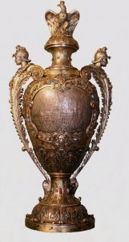
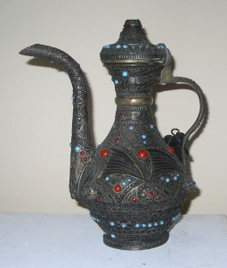

© Muzeul Național Peleș


 printați
printați
+40244 310 918 |
peles.ro@gmail.com |
Colecția de argint și metal comun
Colecția de orfevrărie și metal comun a Muzeului National Peleș, compusă din aproximativ 5500 de piese cuprinde obiecte cu o deosebită valoare artistică și documentară. Piesele au aparținut regilor și reginelor României, altor membri ai Casei regale române și unor personalități, contemporane lor.
|  | Nucleul colecției a fost creat de regele Carol I, prin achiziționarea unor piese de la diferite centre de prelucrare a metalului din Europa, Asia și Statele Unite, demers continuat cu pasiune de urmașii săi. Servind ca pretext pentru a marca diverse momente importante din viata suveranilor, aniversari, nașteri, casatorii, comemorări, evenimente definitorii pentru istoria României, valoroasele obiecte de orfevrărie devin martorele trecutului și al istoriei. |
Atelierele englezești din Londra, Edinburgh, Sheffield, Birmingham, Chester, au îmbogățit colecția regala cu obiecte deosebite. Meșterii argintari Eduard Barnarc, W. Hutton, Martin Hall, William Cooper, James Rodgers, Frederick Bradford, Richard Hennel, autorii unui mare numar de piese din argint și aur au realizat, printre alte obiecte de mare valoare artistica existente în colecție, cupa de la botezul printului Ferdinand, oferita acestuia de nașa sa, Victoria, soția împăratului Friedrich III în anul 1865 și tabachera pe care a primit-o principesa Maria din partea bunicii paterne, regina Victoria, în 1897, la Jubileul de 60 de ani de domnie a acesteia. Tabachera cu semnătura Mariei în email albastru, ca de altfel și una dintre trusele sale de călătorie, primita cu ocazia nuntii cu principele moștenitor Ferdinand și cupa cu capac din argint aurit, oferita regelui Carol al II-lea după renovarea palatului regal din București, din 1937, reprezinta de asemenea opere deosebite pentru argintăria provenita din Imperiul britanic, pe lângă celebrele servicii de ceai, câni decorative, platouri.
Franța este reprezentata prin piesele executate în celebrele ateliere de la Paris, Dijon, Rouen. Tony Szirmai, Gustav Keller, Meurice Fourment, Christoffle, Antoine Cosson Corby si-au adus contribuția la îmbogățirea colecției regale de metal prin executarea unor piese de mare valoare: casete pentru scrisori, gravate cu dedicație pentru regele Carol I, tacâmuri din argint cu stema regatului României, jardiniere, litiere, sfeșnice, platouri, zaharnițe ornate cu motive rocaille de o rara finețe, specifice spiritului parizian.
Se impun prin calitate, obiectele realizate în Austria, la Viena, de catre renumiții artiști Hartmann, Carl Hiess, Georg Adam Scheid, cele create în Italia la Bologna, Roma, Milano, alături de piesele produse în Cehia la Brno și cele produse la Lucerna în Elveția.
Atelierele rusești, vestite pentru calitatea și tehnicile distincte de prelucrare a metalelor, sunt ilustrate prin piese elaborate în atelierele din Sankt – Petersburg, Moscova, ateliere renumite și datorita statutului de Furnizoare ale Casei Imperiale Ruse. Se disting operele orfevrilor Carl Fabergé, Mikhail Evlampievici Perkhin, Anders Johansson Nevalailen, Ivan Khlebnikov, Aleksader Timofeevich Sheviakov, Alexander Egorov, autori ai unor obiecte deosebite, decorate în tehnica niello și email. Platourile decorative, pocalele, serviciile de birou, diferite vase decorative comandate sau primite de membrii Casei Regale Romane (menționam vizitele principilor moștenitori Ferdinand și Maria, la încoronarea din anul 1896 a tarului Nicolae II, vizita regelui Carol I din 1898, a printului moștenitor Carol, din anul 1917, în Rusia țarista) au îmbogățit fondul de metale prețioase al castelului Peleș.
Atelierele turcești, chinezești, indiene, persane au completat colecția de orfevrărie și metal comun a castelului cu piese ornate cu motive specifice fiecărei tari. Impresionează tehnica de lucru și motivele ce îmbogățesc decorația numeroaselor pocale, cupe, vase decorative, vase pentru parfumuri, servicii de ceai, discuri decorative din colecția regala. |
 |
Diversitatea tipologica, decorativa și funcționala a pieselor, mesajul pe care acestea li transmit, originalitatea și unicitatea ca forma și decor a unora dintre piesele colecției, reușesc cu succes sa atragă atenția și admirația publicului vizitator, amator sa cunoască istoria monarhiei romane, dar și a meșteșugului prelucrării metalelor.